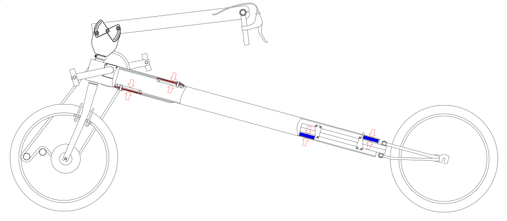

Contents | About | Contact
article 31, issue 13
Reciprocal frames in recumbent cycles
Stephen Nurse (email: cesnur at iimetro.com.au)
December 21, 2021
Carbon pollution from transport is a contributor to potentially catastrophic climate change, and work needs to be done to reduce it. The public focus of this effort is often the move from fossil-fuelled automobiles to renewable-energy-fuelled automobiles. But a second move from automobility to velomobility (heavy, energy intensive high speed land transport to slower less energy intensive transport) would ease carbon pollution and also build personal fitness. Levels of cycling and velomobility depend on cycling infrastructure. This includes economic availability of suitable cycles as well as provisions for safe cycling on- and off- roads.
E-bikes are one such suitable cycle, and they are used for load carrying, longer commutes and family cycling. However the simpler technology of aerodynamic recumbent cycling is also available. As Peter Cox writes in relation to cycling, “Healthy social and cultural systems are those that exhibit diversity - the greater the diversity, the more easily sustainable a system is, and the more resilient it is to disturbance and the better able it is to adapt to change”. This paper shares reciprocal frame concepts from bikes and trikes I’ve built over 10 years but the developments were by no means evo-linear or independent. They rest heavily on the ideas of others. False starts, dead ends, and failed ideas were vigorously pursued and eventually weeded out until some form of reasonable design was achieved. It aims to describe techniques leading to increased availability of aerodynamic, load carrying cycles, however the methods discussed here could be used in static structures. For example, the setup shown in figure 2 could be used or modified to make structures in buildings.
Since a working holiday in Germany in 1987, I have designed, built and raced my own human-powered vehicles. This activity has merged with and reinforced my engineering career, and I count myself privileged to use the modern, almost miraculous technologies of CAD and 3D printing. Although these technologies have limitations, they can make usable plastic parts quickly. CAD and 3D printing remove filters between a designer and products, such as the need for moulds and large scale production.
During university studies in 2016, I wanted to join 2 aluminium tubes to make a Vuong-type leaning trike frame. A light section was suitable for the main beam, but the head tube bearing diameter meant a heavier front section was needed. One tube fitted inside the other with clearances of 5.7 mm top and bottom, and 2.7 mm each side. My engineering work had involved 3D CAD and printing, and my first attempt used 4 printed plastic spacers from Shapeways in the USA, 2 spacers at the front and 2 at the back. The spacers made a rigid assembly by filling gaps between tubes. Unfortunately, the parts were hard to take apart, and I wanted to split the frame easily for transporting in trains and cars.
Soon, I realised the join had 2 redundant frame spacers. Gravity forced the frame halves together, just like the separating mechanism on my German Hercules bike (Nurse, 2017). A new mechanism was made with 2 bolts and 2 spacers. These bolts only resist force under extreme braking.
Figure 1 Da Vinci's bridge structure
Figure 2 Tilting trike beam structure
The trike frame join makes a one-dimensional reciprocal frame, equivalent to a Da Vinci’s bridge structure with 2 beams, and top edges supporting lower edges (Larsen 2013). My trike beam structure uses the extra sides of the outside tube, that is the lower top surface, and the upper bottom surface.
Figure 3 Tilting trike frame schematic
Figure 4 Tilting trike with 406 rim wheel front, 359 rim wheels rear
Since 2016, the 3D printed frame join has been improved and standardised. Backing plates for the spacer were timber, and are now printed, and self-tapping screws have replaced tee nuts and screws. I make spacers myself on a home 3D printer using the standard, biodegradeable PLA (Polylactic acid plastic) material. As well, detailed plans for the figure 4 leaning trike are available on thingiverse (Nurse, 2020). These plans include a CNC routed combined tailbox and seat. This is aerodynamic and includes 50 litres of storage. It clamps to the beam but slides to adjust for leg length. It is removable and does not need frame holes or bosses for support or grip.
This year, I’ve made and tested a bike with rubber block rear suspension. Blocks rest in the rectangular frame and compress over bumps. This is new, but the rest of the bike – tailbox, front end - is based on previous front wheel drive leaning trikes. As with all my cycles, aims were to be aerodynamic, light, comfortable and have good load capacity.
Figure 5 Da Vinci’s bridge structure. Red indicates rigid elements, blue indicates elastomer
Figure 6 Bike frame structure.
Figure 7 Rear wheel frame with suspension blocks. White printed parts fit tight against frame tube sides, and tapped suspension blocks are screwed to the frame.
The rear fork has no pivot point and finds its own position, and the bike’s Da Vinci’s bridge equivalent is shown in figure 5. The fork stem is square steel tubes brazed together as a rectangle. With home 3D printed plastic spacers each side, a pin to hold position, and the rider’s weight, the fork acts as suspension and only rotates in one plane. Suspension blocks are cut down industrial dampers. Although other rubber material can be used (pedal rubbers, cycle tyres and tubes), industrial dampers are designed for this application, so are stable over a wide range of temperatures.
It’s taken time to come to this design. Aside from the reciprocal trike frame already described, I started building front wheel drive rectangular hollow frame bikes in 2012. The 2012 bike and trikes built since then use rectangular aluminium (hollow 82.6 x 28.6 x 2.3 wall) frames with combined seat and tailbox. The front wheel drive does not put chain stress into the frame, leaving body weight as the main stress. This means the deep and thin section takes riding stresses without distortion. Chain stress is an issue on some rear wheel drive recumbents where chain tension flexes the frame. Johnathon Garcia has specifically demonstrated starting a rear wheel drive Metabikes recumbent on a hill to show rigidity under chain stress (Solomon 2021).
Figure 8: 2012 bike rear wheel frame
Figure 9: Touring on the 2012 bike
The first frames of this type were fabricated by Michael Rogan from MR Components in Melbourne, and included Tig welded rear reinforcements and suspension pivots (figure 8). Since then, I’ve developed leaning trikes I can make at home with braze welding, custom cast parts, 3D printing, handsaws and a drill press. This latest rear fork borrows from the front frame join design: body weight under gravity keeps parts together.
Figure 10: Bike frame schematic
Figure 11: Bike. The tail box is a work in progress. It uses a Performer fibreglass recumbent
seat and uses the same material as the main frame for support.
The new bike works well and I’m happy with it. Because the rear wheel frame is brazed together, it takes me longer to produce this bike than the equivalent leaning trike, but the bike back end weighs less and should have less rolling resistance. Modularity is also possible, with the same tailbox and front end accepting bike- or leaning trike- rear ends. The bike rear wheel frame detaches quickly by removing one screw. This should be good for fitting the bike in trains or cars. The wheels now all have the same, very common 406 rim which helps when carrying spare tubes or sourcing tyres.
| Figure 12: Bike back frame &
rear wheel parts: two custom rubber buffers, the custom fabricated fork, four 3D printed guide plates,
screws, and the custom 406 wheel build (including dynamo) weigh 4.6 kg. The main frame is drilled only in one place at rear. |
|
| Figure 13: Trike back frame and rear wheel parts: the Unicycle cranks, YST bottom
bracket, two custom bearing housings, two custom wheel axles, two standard 349 rim pedal prix trike wheels, from MR components, weigh 5.2 kg. The main frame is drilled in four places at rear. |
Figure 14 Rear suspension diagrams and equations.
With 2 separate elastomers working simultaneously, the rear wheel dynamics aren't immediately obvious. However, by considering each elastomer as a pivot point in turn, motion and force equations can be established. In figure 14, the top line is the result of the two lower motions. The simple version has equal spring rates and distances, and in the general version they are unequal.
It will be challenging and interesting to finish off the bike with generator lighting, a lightweight tailbox and possibly a front fairing. All these could make the bike better than my leaning trikes on long distance rides. I would like to have the rear wheel frame (figure 7) made by 3D printing in thermoplastic with carbon fibre, a process used in Superstrata bikes made with Arevo printing technology.
Figure 15
The frame join and suspension techniques discussed in this paper could be used in buildings or structures where retractable or resilient elements are required. Figure 15 shows an example. It is a version of figure 2 with a retractable cantilever beam, which could be used to support an annexe on a house or caravan.
Reciprocal frame structures can be used in cycle frames to provide suspension, or to combine frame separation with a step up in beam size. The frames have few component parts and work in conjunction with 3D printed parts which can be home printed in biodegradable PLA plastic. Furher simplification would be possible with carbon fibre reinforced parts such as a 3D printed rear wheel bike frame.
Bijker, W.E., 1997. Of bicycles, bakelites, and bulbs: Toward a theory of sociotechnical change. MIT press.
Cox, P., 2006. Stifling Innovation in Cycle Technology. Velo Mondial.
Larsen, O.P. and Lee, D.S.H., 2013, September. Reciprocal Frames (RFs) used for quick- built deployable emergency shelters. In Proceedings of IASS Annual Symposia (Vol. 2013, No. 9, pp. 1-7). International Association for Shell and Spatial Structures (IASS).
Nurse S. Leaning trike plan on thingiverse
https://www.thingiverse.com/thing:4201871/files
Nurse, S., 2017 A Simple Leaning Trike (Masters dissertation, Monash University).
https://bridges.monash.edu/articles/thesis/A_Simple_Leaning_Trike/5373910
Solomon G., Garcia J. 2021 laidback bike report video, Jun 2021, Metabikes segment
https://www.youtube.com/watch?v=DxVvGb29dXI&t=4645s